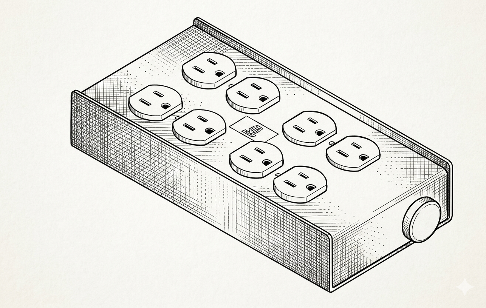
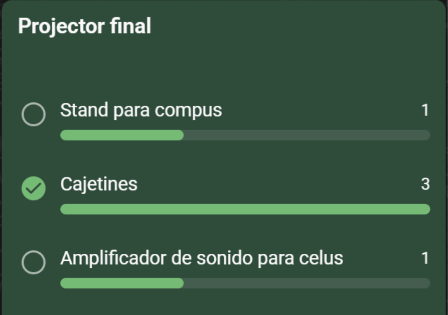
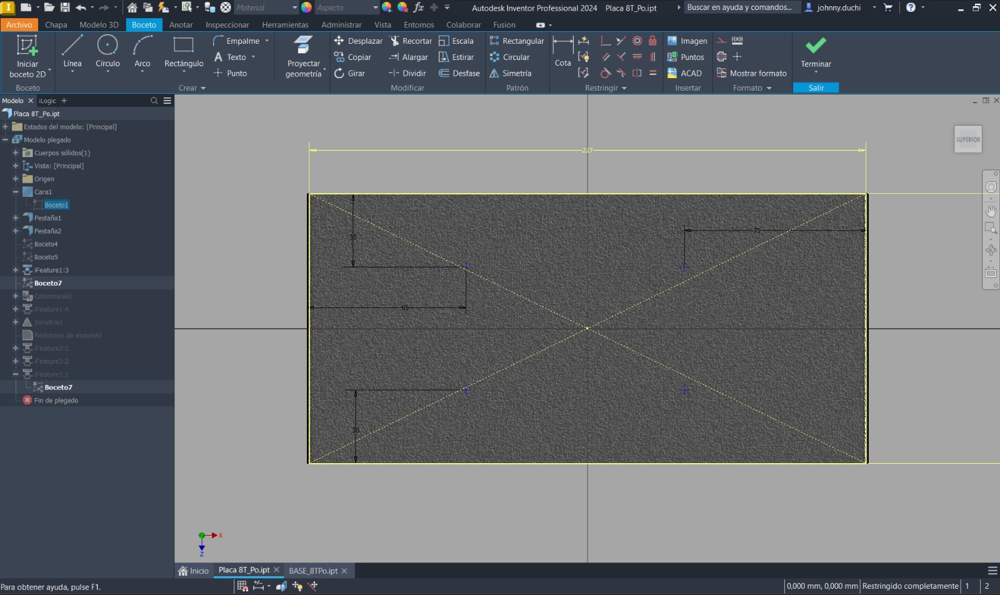
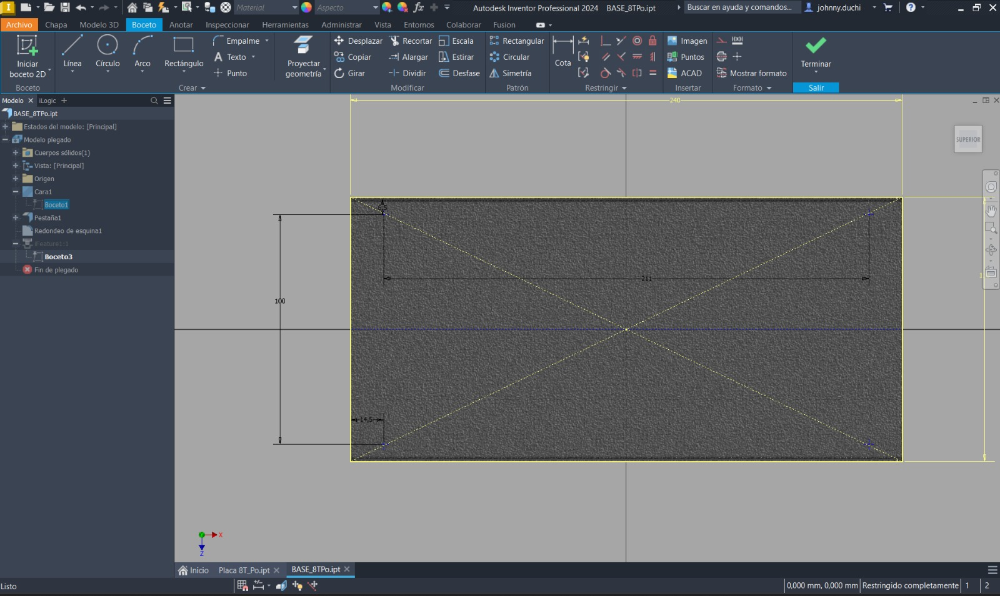

Cajetín Eléctrico

Justificación del Prototipo
La elección de este proyecto nace de la necesidad de optimizar la gestión energética en el sector de la producción de eventos y estudios de grabación. El equipo identificó que, a pesar de ser un componente crítico, la distribución eléctrica estándar carece a menudo de sistemas de monitoreo preventivo y conexiones de alta seguridad. El enfoque principal del prototipo es integrar seguridad, monitoreo y estándares industriales en un solo dispositivo compacto, diseñado bajo principios de fabricación digital.
Objetivos del Prototipo
- Optimización de cortes mediante control numérico computarizado (CNC).
- Gestión eficiente de la cadena de suministro y costos de producción.
- Validación técnica de los sistemas de medición y distribución de carga.
Descripción del Proceso
El primer paso para elegir el producto oficial a modelar fue realizando una encuesta. Se contaban con otras dos opciones a parte de la que al final se escogió (cajetín), las cuales fueron un stan para computadoras y un amplificador de sonido para celulares. Para llegar a estos tres productos finalistas se realizó una lluvia de ideas considerando la posibilidad de satisfacer una necesidad en la comunidad, así es cómo después de debatir pros y contras de cada producto, se llegó a la conclusión que el producto más factible es un cajetín ya que resuelve un problema muy común pero muy poco discutido: la sobrecarga en las fuentes de poder en eventos donde se emplean varios dispositivos que, ante un cortocircuito debido a la alta cantidad de corriente, puede dañar severamente los equipos eléctricos.

Diseño Paramétrico
La disposición de componentes se han desarrollado íntegramente en Autodesk Inventor, facilitando la iteración de medidas, el cálculo de costos de fabricación y la selección técnica de materiales y proveedores. A continuación se muestran los bocetos del prototipo (dibujados en Inventor).


Diseño del esqueleto
El diseño del esqueleto (donde va a ir apoyado el prototipo) se lo realizó en inventor tomando en cuenta parámetros de practicidad de uso y optimización de material. En el primer video se muestra un cajetín de 2x2 mientras que en el segundo se muestra uno de 4x (las piezas ensambladas que conforman el prototipo pertenecen al boceto previamente diseñado en 2D para luego ser extruidas a un cierto espesor y posteriormente ensambladas en el prototipo objetivo)
Cajetín 2x2
Cajetín 4x2
Ventajas del diseño
A diferencia de los cajetines convencionales, este prototipo incorpora un medidor de voltaje digital. Esta implementación permite al operario conocer en tiempo real la estabilidad de la red, una función vital para proteger equipos de alto valor económico (sistemas de audio, iluminación y procesamiento).
Ensamble
A continuación se muestran los cajetines ya ensamblados en los tamaños 2x2 y 4x2.
Cajetín 2x2